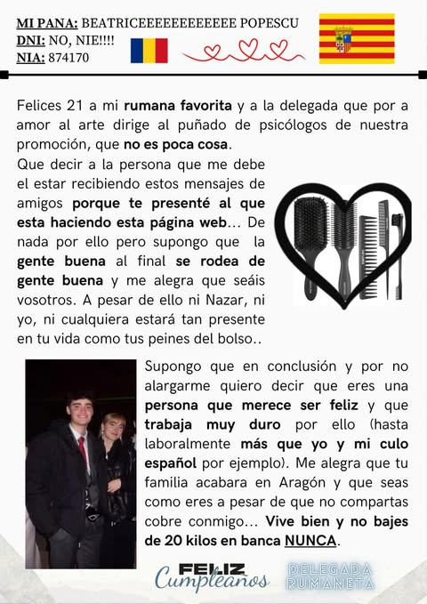

¡Feliiiz cumple, Beuskiii! 😚 Hoy la futura psicóloga de la familia cumple veintiuno, ¡guau! Y parece que fue ayer cuando jugábamos con las Monster High en tu antigua habitación, llena de pósteres, pintada de negro y fucsia. Aún recuerdo aquellas tardes en las que nos la pasábamos jugando, algo tan cotidiano para nosotras en esos momentos. Nos veíamos compartiendo carcajadas inocentes todas las tardes. Me llena de nostalgia pensar en aquellos años en los que no nos dábamos cuenta de que, tarde o temprano, todo cambiaría, que creceríamos. Y, con ello, no volveríamos a pasar esas tardes en compañía de la otra o hablando sobre cuánto deseábamos crecer y mudarnos juntas sin saber siquiera dónde. Ahora, en cambio, ya ha pasado el tiempo, ese tiempo que tanto deseábamos que pasase, y solo nos deja darnos cuenta de lo poco que aprovechamos esos momentos, pensando que serían eternos, sin saber que, a día de hoy, nos veríamos una vez cada mucho tiempo. Ahora ya no nos quedamos sin temas de conversación; pasa tanto tiempo que, para ponernos al día, nos acaba faltando tiempo, tiempo del cual no disponemos desde hace muchos años. “Tiempo”, joder, qué problemas da una simple palabra, ¿no? Ahora tú tienes tu vida: en Teruel, tu novio, tus amigos, tu vida en sí. Pronto acabarás este sueño que tanto deseabas cumplir, y déjame decirte que nadie más que tú lo merece. Has estado tanto por la gente a la que quieres que se te ha olvidado estar por ti en más de una ocasión, encargándote de cosas que no te correspondían siendo tan pequeña y asumiendo las consecuencias de los actos de personas externas, cerrándote en banda, hundiéndote tú sola sin pedir ayuda cuando la necesitabas, pensando que sería lo mejor. Has pasado por cosas que una niña no debería pasar, y has logrado salir con todo por delante, enorgulleciéndote a ti y a los demás, de ti misma y de tus logros. Cada día estás más cerca de alcanzar lo que tanto añorabas desde pequeña, y que, aun con todo, sigas con una sonrisa (y manteniendo la calma que tanto le falta a esta familia, jsjsja). Me alegro de que por fin tengas a una persona como Nazar a tu lado, que te aporte tanto y te sepa querer como nadie más —que tú— merece. Estoy feliz por ti y muy orgullosa, Bea. Siempre lo he estado. Aunque nadie llegara a creer en ti, yo sí lo hice y lo haría mil veces más, porque para mí eres mi hermana y lo has sido siempre, y no precisamente por el parecido o por las peleas con polillas (nunca te perdonaré que esa noche no me acompañaras al baño), sino por eso tan nuestro que siempre se mantendrá dentro de nosotras, aunque pasen años y kilómetros que nos separen a nuestro paso. Serás una psicóloga increíble: tienes vocación y eres perseverante. Ayudarás más a los pacientes de lo que te puedas llegar a imaginar, porque, al igual que lo has hecho conmigo, tus palabras calmarán el alma de muchos de ellos. Esto no quiere decir que debas dejar de lado esa faceta de escritora que tienes; sigue en pie mi propuesta de que saques tu propio libro de poemas. Cuando alguien tiene un don así, no debe desaprovecharlo. Y por eso mismo, un día juramos sacar de la pobreza a esta familia con los sueños de ser millonarias que teníamos y demostrar que, si se quiere, se puede. Y nosotras siempre hemos querido lograr lo que nos hemos propuesto, confío en que lo mantendrás y que acabaremos cumpliendo lo que tanto deseábamos. Con todo esto, me voy del tema. Que disfrutes mucho en tu día y que sigas cumpliendo muchos más aunq eso supongo envejecer y acercarte lentamente hacia un final inevitable. BESITOOOS
Felicidadess Beaa, Solo quería escribirte algo porque te quiero mucho y hoy es un día especial. Me alegra un montón tenerte en mi vida, porque además de ser familia, eres alguien con quien me siento cómoda. Gracias por siempre tratarme con cariño, por tus consejos, por escucharme cuando necesito hablar y por ser tan linda conmigo. Eres una persona especial, con una energía muy bonita, y sé que te esperan cosas increíbles. Ojalá este año que empieza para ti esté lleno de momentos felices, gente que te quiera bien, y que cumplas todo lo que te propongas. Te mereces lo mejor del mundo.
Felicidades, Bea. Que sepas que eres la mejor hermana del mundo. Eres muy especial para mí y siempre lo vas a ser. Me has ayudado a ser mejor persona y en tantas cosas que me hacen siempre ver lo mucho que me quieres y cómo buscas lo mejor para mí siempre. Estoy súper contento con cómo te va todo. Espero que todo siga así y que nos veamos pronto, para que podamos pasar más tiempo juntos como antes.
Beíta muchísimas felicidades vida! Ya llevamos tres años juntitas y siento que somos hermanitas, discutimos y nos ponemos nerviosas y me encanta aunque a veces me desesperes jajajajja. Espero que esta relación sea para siempre porque gracias a ti la convivencia se ha hecho más facil y divertida, te amo mucho vida y espero que sea para siempre ❤❤❤
hola Bea Beita Beuchii, espero que disfrutes mucho de tu dia de la forma que tu sabes. Doy gracias por haberte conocido, porque aun que no lo parezca, has aportado cosas positivas en mi y estoy muy agradecida. Aunque a veces nos saquemos de quicio en el piso quiero que sepas que te quiero y que me haces muy feliz. Espero que nuestra amistad dure año, un beso.
Siempre disfrutamos muchísimo el tiempo que pasamos contigo. Tienes una energía y una alegría que se contagian sin que te des cuenta. Gracias por ser tan auténtica y por tener ese corazón tan grande. Nos alegra mucho formar parte de tu vida y ojalá seguir compartiendo tantos ratitos juntos. ❤
Beita!! Muchas muchas muchas felicidades, espero que los 21 te vayan perfecto y que sigas haciendo sentir orgullosa a la Bea de 15 años que subía historias de malas noches con la hora, la temperatura y alguna canción deprimente de fondo. No hace mucho que llegué a la que ahora es nuestra casita y desde el primer momento me hiciste sentir que formaba parte de algo, y ahora yo también quiero verte crecer y sentirme cada día más orgullosa de ti. Para mi sois mi familia y teneros cerca me hace sentir la persona más afortunada del mundo. Te quiero mucho, te lo agradezco todo y te deseo lo mejor, hoy y todos los días del año. Muchos besitos <3
muchas gracias Bea por todo lo q has hecho por mí desde q nos conocemos. Has sido un gran apoyo cuando más lo he necesitado. Nos conocimos de casualidad y me alegro q haya sido así y de q nos hayamos visto crecer ambos como personas. Espero q vaya bien tu cumple 🙂
Ya que no estoy en Teruel para felicitarte por tu día, puedo hacerlo por aquí. Muchísimas felicidades mini chef, espero que pases un día genial. No sé muy bien qué poner porque a estas alturas no hay nada que no sepas. Lo único que me queda es decirte que me alegro muchísimo de tener una amiga como tú y que este finde lo vamos a celebrar como toca. Te quiero mucho.
Mi biusky🥹 înca un anişor în viața ta, eres la mejor amiga que he podido tener y tendré y agradezco a la vida por habernos puesto en la misma clase, por haber vivido tantos momentos bonitos juntas y los que nos quedan, gracias por ser como eres y por dejarme ser yo misma contigo, sabes que me tienes para todo y por siempre. Te quiero muchísimo aunque no te lo diga muy a menudo, ahora te esperas hasta el año que viene pupicei 😘

Feliz cumpleaños cielo!!! No se ni por donde empezar... Te deseo un feliz cumpleaños, espero que estes teniendo un día maravilloso y te esten gustando los regalos que te he hecho (incluido el "concepto"). Eres lo mejor que me ha podido pasar nunca, eres guapisima, divertida, inteligente, ¿a mis ojos? Perfecta. Muchas gracias por acompañarme en mi vida, por tener paciencia cuando me pongo autista; y sobre todo, cuando no estoy en mis mejores momentos. Gracias a ti, mis malos momentos no se vuelven tan malos, y espero honestamente poder compartir mas cumpleaños a tu lado. Estoy muy orgulloso de lo mucho que has crecido como persona, tu esfuerzo, tu trabajo, y de verdad que miro atras y me sorprende ese cambio tan gigantesco que has tenido, mas madura, comprensiva... Y bueno, realmente todo esto se que lo sabes, y te diria mil y un cosas mas... Pero bueno, de tanto leer seguramente ya tienes el cerebro frito. Gracias por todo de verdad, eres la mejor. Te amo cielo, feliz cumpleaños.